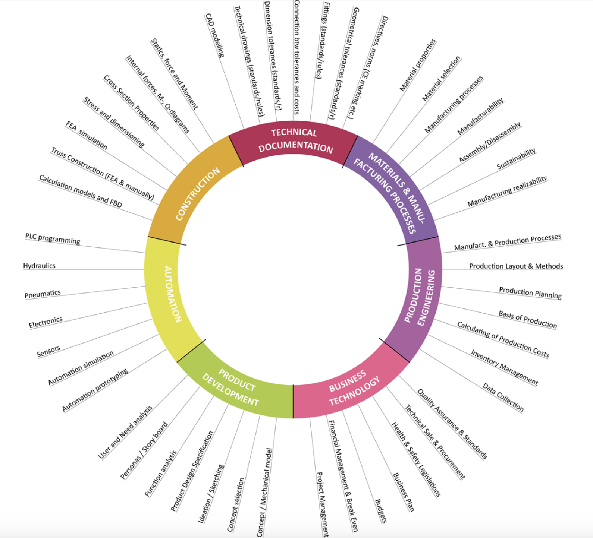
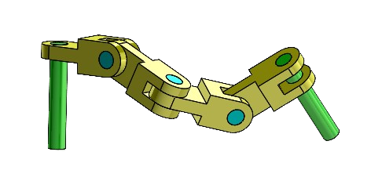
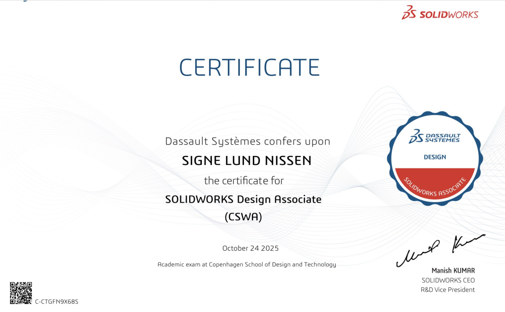
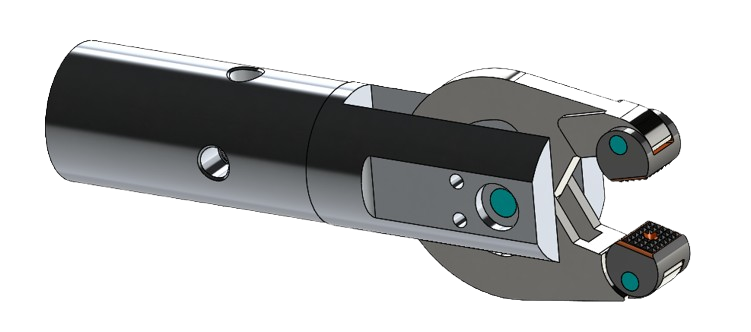

Product Technology
What is it?
As a production technologist you design and develop physical products for consumers and companies and plan the production of them.
The 7 core areas of the degree is:
Construction
Technical documentation
Materials & manufacturing processes
Production engineering
Business technology
Product development
Automation
SolidWorks drawings
In addition to the 7 core areas we use SolidWorks and get the chance to take a series of certificates. We use it to design all of the parts of our product and test the finished construction. It also makes it easier for us to make prototypes in 3D print.


What have i learned so far?
During the first year of my degree i have made 4 projects with focus on the core areas.
The 1. Project:
- Visualize and gather data to be able to mass produce a chair.
- Disassemble the chair and use SolidWorks to draw 3D objects of each part, creating an assembly.
- Resulting in a final drawing of the chair with correct data for reproduction. This likewise gave me enough experience to complete my CSWA Certificate, which consists of multiple parts and 2 assemblies as shown down below.



The 2. Project:
- Design a new trash can that makes waste sorting easier for people living in small spaces.
- Used product development methods such as competitor analysis, Product Design Specification (PDS), function analysis, concept selection and HMI. Construction calculations were used to determine the required strength, while Granta EduPack and the Ashby method were used to identify and select suitable materials and manufacturing processes.
- Developed a trash can concept designed around the requirements of small living spaces, with the material selection and construction supported by calculations and systematic product development methods.
The 3. Project:
- Determine whether it would be profitable for a company to move its production from another country to Denmark.
- Analysed the case using methods from Technical Documentation, Materials & Manufacturing Processes, Production Engineering and Business Technology. Different tables, calculations and models were used to evaluate production, materials, documentation and the business case.
- Produced an assessment of the feasibility and profitability of moving the company's production to Denmark, based on technical and business-related factors.
The 4. Project:
- Design a small and modular LED light source for a montre in cooperation with the company Fantastic Bricks.
- Worked directly with a real company and an actual product problem, applying knowledge from all seven core areas. The project included product development, construction, materials and manufacturing processes, technical documentation, production engineering and business technology, including LEAN methods.
- Developed a modular LED light source concept that addressed the company's requirements while gaining practical experience working with a real customer, real-world constraints and a development process that applied to the customer's needs.
Elective course in mekatronics
Automated Assembly of a Wooden CarAs part of our elective course, we worked on an automated assembly project where we assembled a wooden car using robotic technology, pneumatics, and Arduino. The project involved designing and developing our own fixtures to securely hold and position the car and its components during assembly. We then programmed industrial robots to perform different assembly operations and developed electrical circuits using Arduino and pneumatic components to control the process. Through the project, I gained hands-on experience with fixture design, robotics, pneumatics, electrical circuits, Arduino programming, and automated production processes. The project also gave me experience in integrating mechanical, electrical, and digital solutions into one functioning production system.